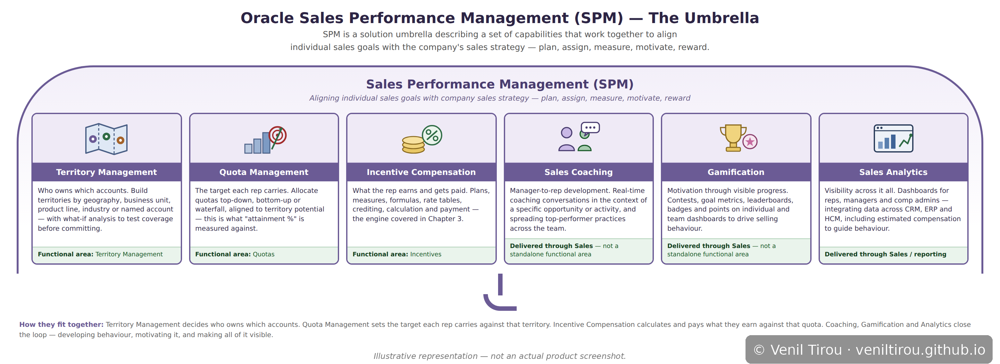
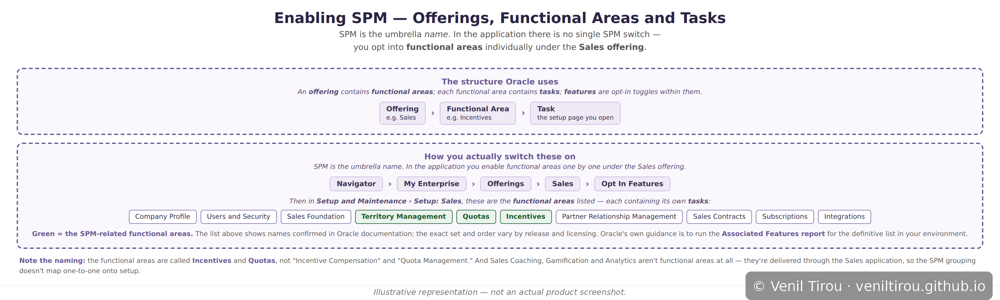

Foundation
Sales Performance Management — The Landscape
Before going deep on any one capability, it helps to see the whole map. This chapter covers what Oracle Sales Performance Management (SPM) actually is, the six capabilities that sit under it, how they chain together, and — a detail that trips up a lot of people — how you actually switch them on, which is not what the marketing name would lead you to expect.
Why this chapter exists: Incentive Compensation is the
capability most people meet first, because commission is the visible
part. But it doesn't work in isolation. It depends on territories to
decide who owns which accounts, and quotas to define what each rep is
measured against. Coaching, gamification and analytics sit alongside it,
closing the loop between what a rep does and what the business wants.
Understanding that landscape first makes every individual capability
easier to place.
A note on terminology: "SPM" is a solution name Oracle
uses to describe a group of capabilities that work together. It is not a
product you install or a single switch you turn on. In the application
itself, these capabilities appear as separate functional areas
that you enable individually under the Sales offering.
The second diagram below shows that structure, because the gap between
the marketing name and the setup name is a genuine source of confusion.
The Umbrella
Six Capabilities, One Purpose

📱 On mobile? Pinch to zoom to read the details clearly.
What this shows: The six capabilities Oracle groups
under Sales Performance Management, drawn as what the name suggests —
one canopy, six panels. They aren't a random collection; they chain
together in a specific order. Territory Management
decides who owns which accounts. Quota Management sets
the target each rep carries against that territory. Incentive
Compensation calculates and pays what they earn against that
quota — the engine covered in depth in Chapter 3. Then Sales
Coaching, Gamification and Sales
Analytics close the loop: developing the behaviour, motivating
it, and making all of it visible. Read left to right, it's the lifecycle
of a sales rep's year — where they sell, what they're aiming at, what
they earn, and how they improve. Each panel is a distinct capability,
but they share a single frame, and a gap in any one of them is felt
across the rest.
Enabling It
Offerings, Functional Areas and Tasks

📱 On mobile? Pinch to zoom to read the details clearly.
What this shows: How the capabilities above translate
into things you actually configure. Oracle's structure is
Offering → Functional Area → Task: an offering (like
Sales) contains functional areas, each functional area contains the
tasks you open to configure it, and features are opt-in toggles within
them. There is no single "SPM" switch — you enable functional areas one
by one under the Sales offering, via Navigator → My Enterprise →
Offerings → Sales → Opt In Features. Two things are worth noticing.
First, the names don't match the marketing: the functional areas are
called Incentives and Quotas, not
"Incentive Compensation" and "Quota Management." Second, only three of
the six capabilities appear as functional areas at all — Sales
Coaching, Gamification and Analytics are delivered through the Sales
application and its dashboards rather than as separate setup areas. The
solution grouping and the setup structure simply don't map one-to-one,
and knowing that saves a lot of hunting.
Where to Go Next
The takeaway: SPM is the map; the capabilities under it
are the territory. Most of the depth in this series so far sits in one of
those six boxes — Chapter 3: Incentive Compensation
follows a single deal from Closed Won through crediting, calculation and
payment, and is the natural next step from here. The remaining
capabilities each have their own chapters ahead of them; this page is the
frame they'll hang on.